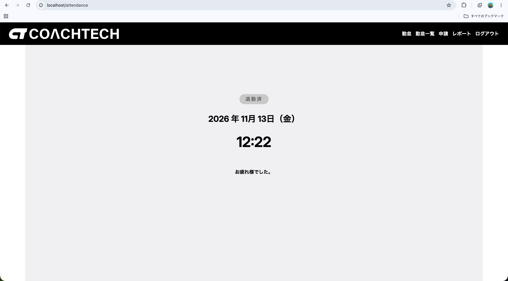
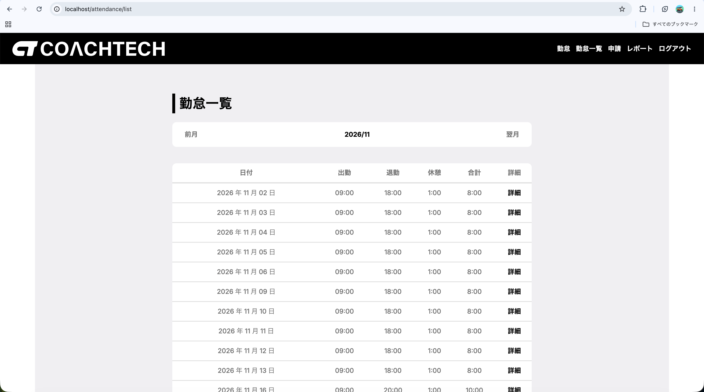
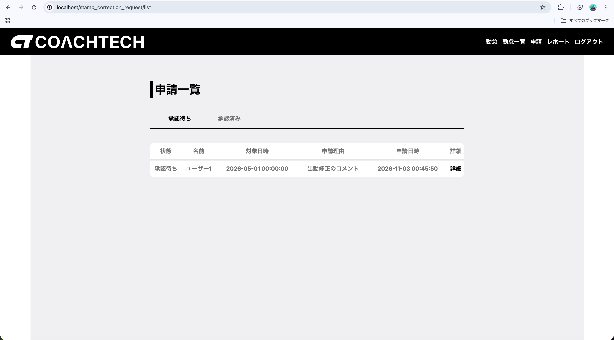
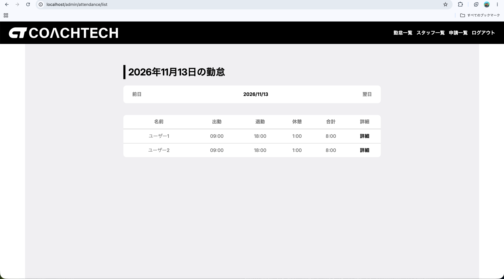
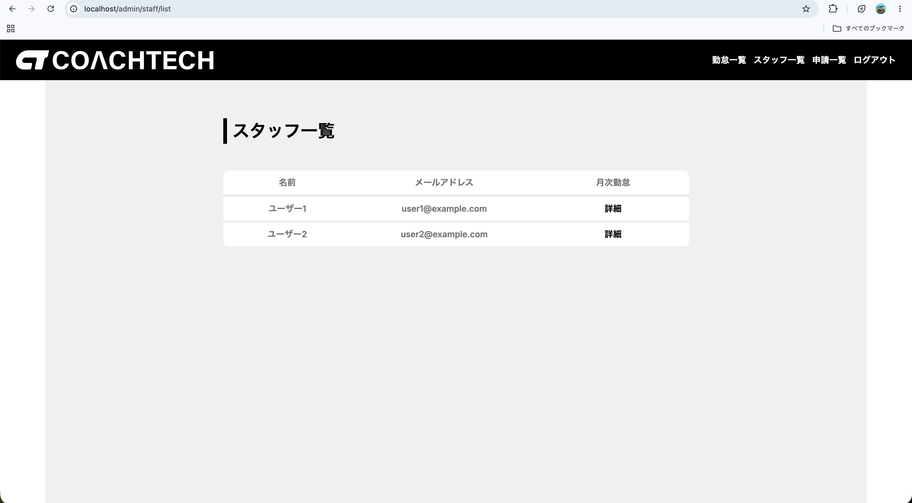
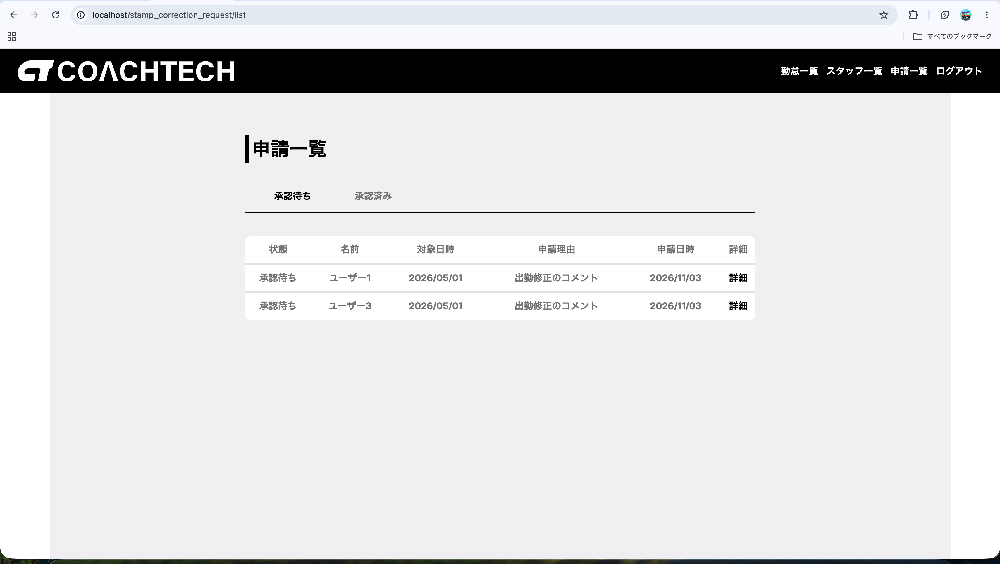

勤怠管理アプリ
出勤・退勤・休憩の打刻から、勤怠の修正申請・承認、月次レポートまでを行えるWebアプリ。外部システムから勤怠を操作できるREST APIも備えています。
- 機能
- 打刻（出勤・退勤・休憩） / 勤怠一覧・詳細 / 修正申請・承認 / 月次レポート / スタッフ別勤怠のCSV出力 / REST API
- 技術
- PHP 8.2、Laravel 10、MySQL、Laravel Sanctum、PHPUnit、Docker（Laravel Sail）
- 担当
- バックエンドの実装
工夫した点
一般ユーザーと管理者という2つの立場があるため、「誰が・どの勤怠を・どの状態のときに操作できるか」を先に整理し、実際の運用で起こり得る矛盾や不正な操作を防ぐことを意識しました。
- 1ユーザー1日1件になるよう、
attendancesテーブルに（user_id, work_date）の複合ユニーク制約を設定 - 修正申請が承認待ちの間は重ねて申請できず、管理者も直接修正できないようにして、申請内容と実データの食い違いを防止
- 休憩を削除しても過去の修正申請の記録が残るよう、外部キーを
nullOnDeleteに設定 - APIはSanctumのトークン認証とし、Policyで「一般ユーザーは本人分のみ、管理者は全員分」と閲覧・操作範囲を制御。401・403・404はJSONで統一して返却
- 月次レポートでは直近6か月の勤務時間・残業時間の推移と、遅刻・早退・長時間労働の回数を集計。退勤済みの勤怠だけを合計・平均に含めるようにしました
- 退勤し忘れた過去の勤怠を打刻画面で知らせる機能を追加
- 認可の境界（本人・他人・管理者）や集計結果を、Factoryで作ったデータを使ったFeatureテストで検証
苦労した点・学び
機能が一通り動いた後も、タイムゾーンのずれや、不正な日付パラメータで500エラーになる問題、APIの閲覧範囲の制限漏れなど、実際に使う場面を想定して見直すことで多くの不具合が見つかりました。機能ごとにブランチを切り、Pull Requestで1つずつ修正を重ねる中で、「動く」だけでなく「想定外の使われ方をしても壊れない」ことまで考えて実装する大切さを学びました。
また、開発の途中からはAIコーディングツールのClaude Codeを取り入れて実装を進めました。開発のスピードは大きく上がりましたが、生成されたコードをそのまま使うと、なぜその書き方なのかを自分で説明できない部分が残ることに気づきました。そこで、提案されたコードは一行ずつ読んで意図を確認し、分からない処理はLaravelの仕組みまで遡って調べてから取り込むようにしました。AIは作業を任せきりにする道具ではなく、コードの本質を理解するための相棒としてうまく付き合っていく必要がある、というのが今回の大きな学びです。
画面イメージ
一般ユーザー



管理者ユーザー


